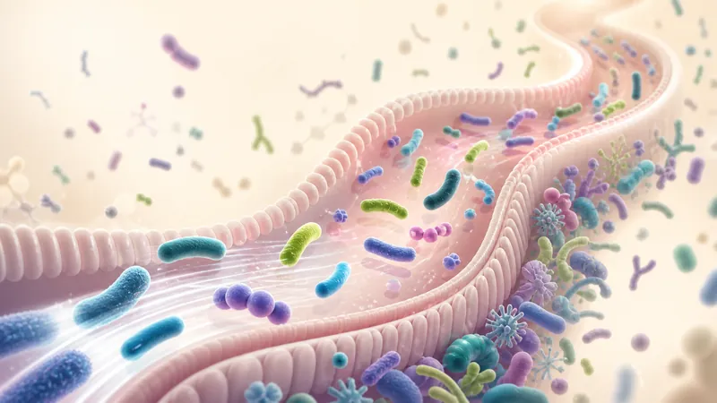

Microbiota sin mitos
¿Los probióticos se quedan en el intestino?

La mayoría de los probióticos no se instala para siempre en el intestino. En adultos, suele detectarse durante el consumo y durante un periodo corto después, aunque la permanencia varía según la cepa, la persona y la zona del aparato digestivo. Eso no significa que sea inútil: un microorganismo puede estar activo e interactuar con el entorno intestinal mientras lo atraviesa.
Entender esta diferencia ayuda a evitar dos ideas engañosas: que un probiótico debe “reemplazar” la microbiota para funcionar, o que encontrarlo en una muestra de heces demuestra que colonizó de manera permanente.
Pasar, persistir y colonizar no significan lo mismo
Cuando ingerimos un probiótico, primero debe sobrevivir a condiciones como el ácido del estómago y las sales biliares. Si después se recupera en las heces, sabemos que al menos parte de los microorganismos superó el tránsito gastrointestinal. Esto se llama supervivencia o recuperación fecal.
Persistencia describe que una cepa siga siendo detectable durante cierto tiempo. Colonización, en sentido estricto, implica que forme una población estable capaz de mantenerse y reproducirse a largo plazo en un lugar concreto. Detectar una cepa unos días después de dejar el producto no basta para demostrar ese establecimiento.
Los NIH explican que los probióticos pueden colonizar transitoriamente la mucosa intestinal siguiendo patrones muy individualizados. Influyen la microbiota de partida, la cepa y la región del tracto gastrointestinal.
¿“Repoblar la microbiota” es una descripción precisa?
La expresión se usa con frecuencia, pero puede dar la impresión de que el intestino está vacío y que un complemento lo llena con bacterias nuevas. En realidad, la microbiota adulta ya contiene una comunidad compleja. Consumir un probiótico no equivale a reemplazarla ni garantiza que las cepas añadidas pasen a formar parte permanente de ella.
Es más preciso hablar de una interacción temporal y específica. Si existe un beneficio demostrado, debe relacionarse con las cepas, la cantidad, la formulación y el objetivo estudiados, no con la idea general de “poner bacterias buenas”.
Por qué es difícil instalarse en una microbiota ya formada
El intestino adulto alberga una comunidad densa y diversa. Sus microorganismos residentes ocupan espacios, consumen nutrientes y se relacionan entre sí y con el organismo. Esta comunidad ofrece una forma de resistencia a la colonización: limita que nuevos microorganismos encuentren fácilmente un nicho estable.
Esa resistencia no es una pared absoluta. La alimentación, los medicamentos, la edad, el estado de salud y otros factores cambian el ecosistema. Aun así, la respuesta a un mismo probiótico puede ser diferente entre dos personas. Un estudio no permite asumir que una formulación se comportará igual en cualquier microbiota.
¿Puede actuar un probiótico que solo está de paso?
Sí. La permanencia indefinida no forma parte de la definición de probiótico. Durante el tránsito, determinadas cepas pueden participar en mecanismos investigados: competir temporalmente por recursos, producir sustancias, modificar metabolitos, interactuar con la barrera intestinal o influir en funciones de otros microorganismos.
Estos mecanismos no son idénticos para todos los productos. Algunos son compartidos por varias especies; otros dependen de una cepa concreta. Por eso la evidencia de un microorganismo no se puede trasladar automáticamente a otro.
El reciente artículo sobre Vivomixx neo 9, microbiota y ácidos biliares ilustra precisamente una idea importante: en un modelo experimental, el beneficio estudiado se relacionó con cambios funcionales y metabólicos, no con demostrar una colonización permanente. Los resultados preclínicos no equivalen por sí solos a eficacia clínica.
Qué puede decir —y qué no— una muestra de heces
Las heces son útiles para investigar microorganismos que salen del intestino, pero no representan de manera completa todas las superficies y regiones intestinales. Encontrar una cepa durante el consumo indica supervivencia hasta la evacuación; no confirma por sí solo adhesión estable a la mucosa.
También importa la precisión del análisis. Identificar solo el género o la especie puede confundir la cepa ingerida con microorganismos parecidos que ya vivían en el intestino. Los estudios más sólidos utilizan métodos capaces de distinguir cepas y toman muestras antes, durante y después del consumo.
Entonces, ¿por qué se recomienda constancia?
Si una formulación se estudió con una toma regular, seguir la pauta mantiene la exposición evaluada mientras dura el uso. La constancia no pretende necesariamente lograr una instalación permanente. Tampoco significa que todas las personas deban consumir probióticos de forma indefinida.
Consulta nuestra guía sobre si se pueden tomar probióticos todos los días: la frecuencia y la duración deben relacionarse con el producto, el objetivo y la evidencia. No dupliques una toma ni prolongues el uso para “forzar” la colonización.
Cómo evaluar un producto sin caer en el mito de la colonización
- Busca la identificación completa. Género, especie y cepa permiten relacionar el producto con estudios concretos.
- Revisa la cantidad viable. Más unidades no garantizan automáticamente más beneficio; importa la cantidad estudiada para esa formulación.
- Comprueba la evidencia. Pregunta si el producto o sus cepas se investigaron en humanos para el objetivo que te interesa.
- Respeta el almacenamiento. La viabilidad depende también de conservar el producto como indica su etiqueta. Algunos requieren refrigeración y cadena de frío.
- Valora seguridad y contexto. En personas gravemente enfermas o con defensas comprometidas se necesita orientación profesional.
Nuestra guía sobre cómo elegir un probiótico reúne estos criterios. Ninguna afirmación sobre “repoblar”, “resetear” o “reemplazar” la microbiota debería sustituir información verificable sobre cepas y estudios.
Preguntas frecuentes
¿Los probióticos colonizan el intestino para siempre?
En adultos, la mayoría no establece una población permanente. La presencia suele ser transitoria y varía según cepa, microbiota y región intestinal.
¿Un probiótico puede actuar aunque no se quede?
Sí. Puede estar metabólicamente activo e interactuar con el ecosistema durante su paso. El efecto debe demostrarse para la cepa y el uso concretos.
¿Encontrarlo en las heces demuestra que colonizó?
No. Demuestra supervivencia hasta ese momento, pero no establecimiento permanente en la mucosa.
¿Más permanencia significa un probiótico mejor?
No. La calidad depende de cepas, cantidad viable, conservación, seguridad y evidencia para el objetivo, no solo de la duración de su detección.
Fuentes consultadas
- NIH Office of Dietary Supplements: Probiotics, Fact Sheet for Health Professionals.
- Morelli y Pellegrino: revisión sobre supervivencia y persistencia de bacterias beneficiosas en adultos sanos.
- Pasolli y colaboradores: revisión sistemática sobre microorganismos alimentarios y colonización intestinal.
- ISAPP: Is probiotic colonization essential?.
- Mullineaux-Sanders y colaboradores: resistencia a la colonización intestinal.
Elige evidencia, no promesas de “repoblación”
Una cepa puede ser útil sin quedarse para siempre. Revisa su identidad, la pauta estudiada y la conservación.
Explorar la guía